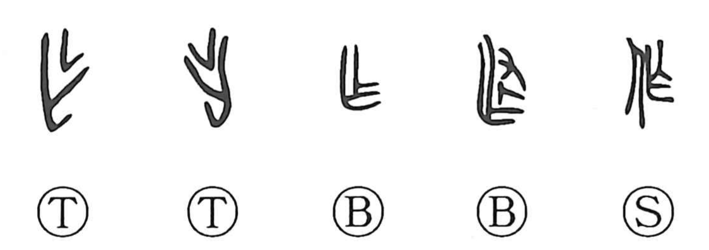

Explanation
作 adds 人, a person, to 乍, which supplies the sound and is itself the earlier graph for making. 乍 pictures a tree branch bent firmly into shape, as when branches are worked into a fence. Making begins here as the purposeful shaping of material.
Early inscriptions use 乍 for constructing settlements or fortifications and for making bronze vessels. The same graph also came to describe actions and undertakings more generally. 作 was formed later to write this broad activity of doing or making.
Its meanings therefore extend from producing an object to carrying out work, bringing something about, beginning an undertaking, or acting in a particular way. Deliberate human activity remains at the centre, whether the result is a tangible object or something accomplished.